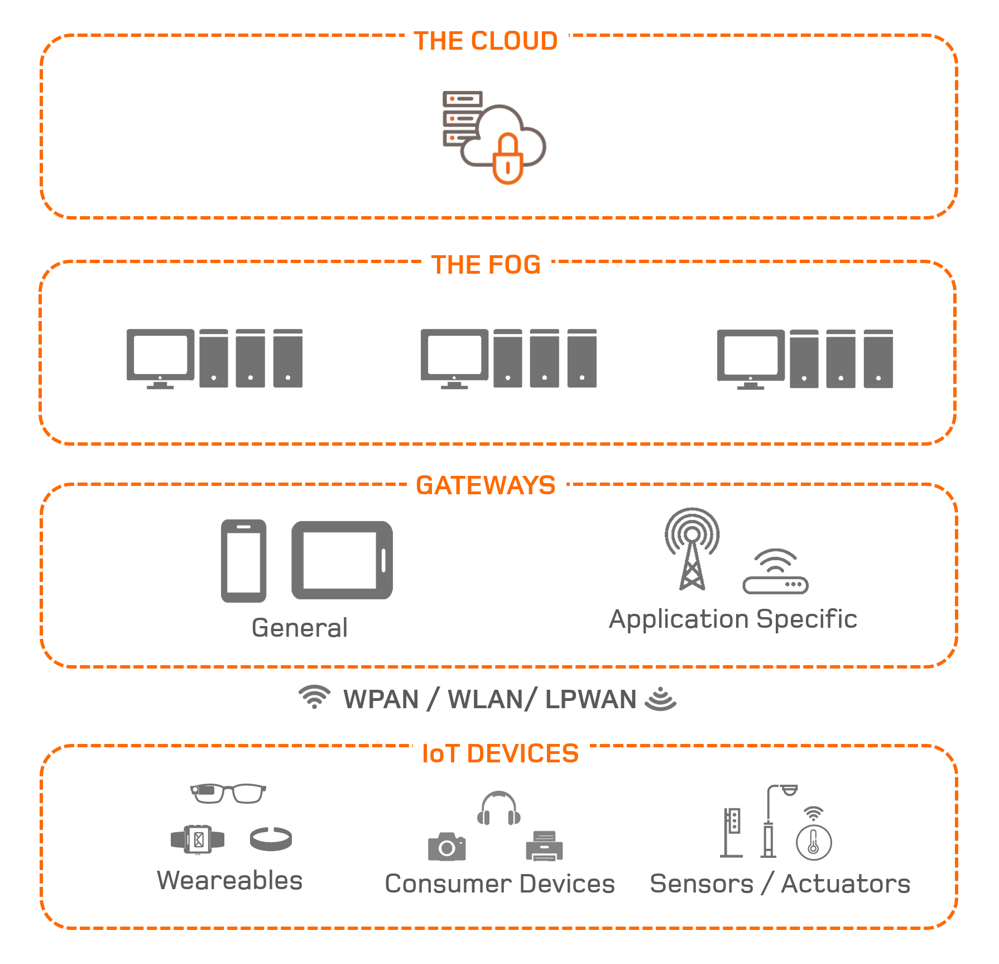

Programación para IoT
Tecnologías
El Internet de las Cosas (IoT) se refiere a la interconexión de dispositivos y objetos a través de Internet, permitiendo que recojan y compartan datos. Estas tecnologías permiten a los dispositivos comunicarse entre sí y con sistemas de gestión, mejorando la automatización y la eficiencia en una variedad de sectores. A continuación, se detallan algunas de las tecnologías más significativas en el ámbito de IoT.
1. Sensores y Actuadores
Los sensores son dispositivos que detectan cambios en el entorno (como temperatura, humedad, luz, etc.) y convierten esos datos en señales que pueden ser interpretadas por un sistema. Los actuadores, por otro lado, son dispositivos que reciben señales de un sistema y realizan acciones en el mundo físico, como encender o apagar dispositivos.

2. Protocolos de Comunicación
Los protocolos de comunicación son fundamentales para la interacción entre dispositivos IoT. Algunos de los más comunes incluyen:

- MQTT (Message Queuing Telemetry Transport): Protocolo ligero utilizado para la transmisión de mensajes entre dispositivos.
- CoAP (Constrained Application Protocol): Protocolo diseñado para dispositivos con recursos limitados.
- HTTP/HTTP: Protocolos de transferencia de hipertexto que también se utilizan en IoT.
3. Plataformas de IoT
Las plataformas de IoT ofrecen infraestructura y herramientas para la gestión de dispositivos, recopilación y análisis de datos. Ejemplos populares incluyen:

- AWS IoT: Plataforma de Amazon que permite conectar dispositivos y gestionar datos en la nube.
- Google Cloud IoT: Herramientas de Google para conectar y gestionar dispositivos IoT.
- Microsoft Azure IoT: Plataforma de Microsoft para construir soluciones IoT en la nube.
4. Redes de Comunicación
Las redes son esenciales para la transmisión de datos entre dispositivos. Algunas tecnologías de red incluyen:

- LPWAN (Low Power Wide Area Network): Redes de baja potencia y largo alcance, ideales para dispositivos IoT que requieren baja transmisión de datos.
- 5G: La nueva generación de redes móviles que ofrece mayor velocidad y capacidad para manejar dispositivos conectados.
5. Big Data y Análisis
La recopilación masiva de datos de dispositivos IoT requiere herramientas de análisis avanzadas. Las tecnologías de Big Data permiten procesar y analizar grandes volúmenes de datos en tiempo real para obtener información valiosa.

6. Inteligencia Artificial (IA)
La IA se utiliza en IoT para procesar datos y tomar decisiones autónomas. Las técnicas de machine learning pueden predecir patrones y comportamientos basados en los datos recopilados por dispositivos IoT.

7. Ciberseguridad
La seguridad es una preocupación crítica en IoT. Las tecnologías de ciberseguridad incluyen:
- Cifrado: Protección de datos en tránsito y almacenamiento.
- Autenticación: Verificación de identidades de dispositivos y usuarios.
- Firewalls y Sistemas de Detección de Intrusiones<: Protección contra accesos no autorizados.
Tabla de Tecnologías de IoT
| Tecnología | Descripción | Aplicaciones |
|---|---|---|
| Sensores | Dispositivos que detectan y miden cambios en el entorno. | Hogares inteligentes, monitoreo ambiental |
| Actuadores | Dispositivos que ejecutan acciones físicas en respuesta a señales. | Sistemas de riego automático, control de luces |
| MQTT | Protocolo ligero para la transmisión de mensajes entre dispositivos IoT. | Automatización industrial, monitoreo de salud |
| CoAP | Protocolo optimizado para dispositivos con recursos limitados. | Dispositivos de bajo consumo en hogares inteligentes |
| AWS IoT | Plataforma de Amazon para conectar dispositivos IoT y gestionar datos en la nube. | Soluciones empresariales, gestión de flotas |
| Google Cloud IoT | Herramientas de Google para gestionar dispositivos IoT y analizar datos. | Smart cities, gestión de infraestructura |
| LPWAN | Redes de baja potencia y largo alcance, adecuadas para IoT. | Agricultura inteligente, ciudades inteligentes |
| 5G | Nueva generación de redes móviles con alta velocidad y capacidad. | Vehículos autónomos, servicios en tiempo real |
| Big Data | Tecnologías para el análisis y procesamiento de grandes volúmenes de datos. | Análisis predictivo, toma de decisiones empresariales |
| Inteligencia Artificial | Algoritmos que permiten a los dispositivos aprender y tomar decisiones basadas en datos. | Monitoreo de salud, mantenimiento predictivo |
| Ciberseguridad | Conjunto de tecnologías y prácticas para proteger dispositivos y datos IoT. | Protección de redes, dispositivos médicos conectados |